海外出海内容
新国家的消费者，
为什么需要我？
交付：场景脚本、成片、国别与语种版本。

/CreativeSUPERCONTENT / CLIENT SOLUTION让内容，接上你的生意
从出海、品牌矩阵到电商，
把你的业务任务变成可持续的内容交付。
同一品牌，用内容回答三个业务问题
新国家的消费者，
为什么需要我？
交付：场景脚本、成片、国别与语种版本。
品牌自己的账号，
下一周发什么？
交付：内容排期、栏目素材、平台适配版本。
消费者看商品时，
还有什么没理解？
交付：演示短片、详情素材、商品卡与活动版本。
共用品牌事实与产品素材，按市场、渠道和购买问题组织版本。
我们的触客动作
大会 / 业务交流
行业样片与具体问题
上新 / 出海
大促 / 门店活动
对齐表达、渠道
与验收标准
一品牌 / 一产品
一渠道启动
按反馈追加内容
进入下一经营节点
每次触达带三样东西：相关作品、产品问题、第一轮交付建议。
合作路径为服务建议；不承诺免费试作、固定获客量或成交结果。
行业方案 · 根据客户任务组合场景
生活问题 → 功能场景
新品功能 → 直观演示
使用疑问 → 步骤与细节
季节上新 → 穿搭与场景
消费节点 → 食用与饮用场景
车型与活动 → 到店与预约
从行业样片与一个真实任务进入，把内容需求变成可报价、可验收的项目。
行业覆盖为可讨论的服务方向，实际范围依据客户资料、素材授权与项目确认。
场景一 · 海外出海内容
从一个国家、一个产品、
一个渠道开始验证。
品牌规范、产品卖点、授权素材、目标国家与渠道。
组织脚本、AI 制作与编辑，本地表达经客户或指定审核方确认。
交付目标规格、语种与文件命名，并记录质量检查和版本差异。
先在单一市场验证，再逐步扩展国家、渠道和场景。
账号发布、投放和媒体预算按项目单独约定；内容制作不等于自动承担当地运营。
场景二 · 国内内容矩阵
品牌自有账号的内容计划
使用情境、经验说明、产品细节与选择问题。
开场演示、场景变化、产品功能与活动节点。
品牌解释、服务信息、产品讲解与门店内容。
交付栏目规划、脚本、素材批次和平台版本；客户确认内容并组织账号发布。
围绕品牌自有账号提供内容服务；发布、账号运营与投放分别约定。
场景三 · 电商内容

把功能、步骤、差异与适用条件呈现清楚。
围绕购买问题组织结构，适配商品页面。
按上新和大促节点制作画面、比例与版本。
交付客户指定平台规格、文件目录和使用说明。
画面来自既有作品；店铺发布、媒体投放与经营结果由项目约定，不承诺销量或转化增幅。
行业方案 · 家电 · 家居
触达对象品牌 / 电商 / 出海 / 区域营销负责人
进入节点新品上市、季节需求、装修季与大促
当地生活场景、功能演示、安装使用说明与国别语种版本。
从一个市场与一种使用场景验证。功能栏目、生活问题、清洁与使用 FAQ、上新节点内容。
小红书 / 抖音 / 视频号适配版本。空间适配、操作步骤、功能展示、详情与活动规格素材。
产品性能与比较信息由客户确认。本页为行业方案示意，非新增客户案例或效果承诺。
行业方案 · 3C · 数码
触达对象品牌 / 产品营销 / 电商 / 海外营销负责人
进入节点新品发布、新功能更新、区域上市与商品页更新
手机与硬件的场景短片、功能表达、本地化混剪与语种版本。
围绕目标市场的实际使用情境。操作步骤、功能技巧、配件兼容说明与产品 FAQ 栏目。
客户审核参数与兼容性信息。卖点演示、安装步骤、配件细节、商品详情与活动素材。
比较主张需有依据和明确条件。本页为行业方案示意；后页提供既有手机本地化作品作为制作表达参考。
行业方案 · 美妆 · 个护
触达对象品牌 / 内容 / 电商 / 区域营销负责人
进入节点新品新色、季节使用需求、商品页与活动更新
使用场景、产品步骤、语言与区域表达适配素材。
客户或指定本地审核方确认表达。使用顺序、质地演示、选购 FAQ 与季节栏目内容。
围绕品牌自有账号连续供给。细节展示、使用演示、商品规格与活动版本。
不虚构功效、前后效果或检测结果。本页为行业方案示意；功效、适用条件与比较信息由客户提供依据并审核。
行业方案 · 服饰 · 运动
触达对象品牌 / 内容 / 电商 / 出海营销负责人
进入节点季节上新、新系列、运动节点与区域上市
季节搭配、户外与运动场景、区域表达和语种版本。
按市场、季节与产品条件策划。穿搭主题、面料细节、运动使用场景与系列栏目。
确认素材人物、肖像与品牌授权。商品细节、结构演示、组合搭配、详情与活动素材。
性能主张需依据，不代替真实测量。本页为行业方案示意；授权素材与 AI 制作的具体方式按项目确认。
行业方案 · 食品 · 饮料
触达对象品牌 / 电商 / 内容 / 区域营销负责人
进入节点新品、节日礼赠、饮用食用场景与大促
包装规格、食用与饮用场景、语言和区域表达素材。
核对当地表述与产品信息。用餐场景、饮用时刻、产品介绍、节日与系列素材。
围绕经营排期形成持续内容。包装与组合说明、食用方式、礼盒与活动规格素材。
配料、营养与适用信息由客户审核。本页为行业方案示意；不虚构口味评价、营养功效或消费者背书。
汽车门店行业示意 · 非指定品牌案例
触达对象品牌 / 区域营销 / 经销商 / 门店负责人
进入节点车型上新、门店活动、服务更新
用空间、功能与使用动作，说明车型适合谁。
展示位置、展厅、服务流程与活动信息。
回答试驾、到店准备和服务相关问题。
素材指向客户提供的真实预约入口。
交付车型与服务说明短片、门店 FAQ、预约引导素材；品牌视觉、车型信息与预约入口由客户确认。
既有作品 · 手机本地化混剪
REAL FILM / LOCALIZED EDIT
我们和客户一起讨论：
什么场景适合产品？
什么卖点需要更清晰？
第一轮要验证什么表达？
复用既有大会作品资源；展示制作表达，不附加未核验的商业效果、交付量或客户评价。
某全球家电品牌 · 东盟六国国际赛事项目
项目累计曝光
条分发记录
累计互动
从生活场景进入，
把产品功能交到画面里。
截至 2026.08.17，历史项目统计，含自然与投流；分发记录不等于独立母片数量。画面来自既有作品，项目总量不归因于当前单一画面；历史结果不构成新项目效果保证。
内容交付的可见过程
讲什么、怎么讲、
目标规格是什么。
品牌、产品事实、
表达与授权确认。
按场景、语种、平台
和比例组织成片。
画音、字幕与规格
逐项检查、归档。
按客户授权数据
组织下一轮制作。
客户确认品牌事实、素材授权、脚本方向、发布与验收。
我们负责策划与制作、版本适配、质量检查、目录交接和迭代建议。
交付格式、审核轮次、验收标准、授权范围与反馈数据口径，按双方确认的 SOW 执行。
第一次合作的入口
轮付费小项目
出海上市、品牌栏目或商品素材，先选最急的一项。
明确渠道、数量、语种、周期、价格与审核轮次。
按 SOW 完成首批内容，验收后讨论下一批计划。
先把 Brief 和验收标准讲清楚，再确认报价与开始日期。
SOW 即双方确认的项目范围说明；发布、投放、账号运营与媒体预算分别约定。